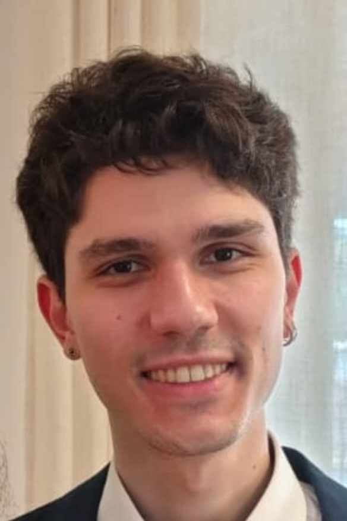

Master's in Economics, University of São Paulo

I am a Master's student in Economics at the University of São Paulo (USP), advised by Raphael Corbi and Janis Skrastins. I also worked as a Research Assistant to Gautam Rao (UC Berkeley), Diana Moreira (UC Davis) and Jonas Hjort (UCL), from January to December 2025.
I am currently studying real estate and household finance. My thesis asks how a positive first-time homeownership shock to low-income families affects crime. By exploiting the lottery design of Minha Casa Minha Vida, Brazil's largest public housing program, I separate the neighborhood and wealth effects on criminal behavior. I am also interested in theoretical econometrics and Industrial Organization. In a separate project, I study when estimated demand elasticities depend on what the researcher assumes about consumers' unobserved tastes. During my PhD, I want to develop research in financial economics, especially on banking regulation and portfolio allocation. I plan to answer questions such as how credit markets respond to quantity regulation, and how inequality affects the risk composition of optimal portfolios.
Before USP, I earned a Bachelor's in Economics from the University of Brasília. I hold Portuguese and Brazilian citizenship.
Curriculum Vitae (Updated October 2026)
Email: marcos.coelho@usp.br
GitHub: marcosscoelho
Best Paper Award finalist, Econometrics category, 48th National Meeting of the Brazilian Econometric Society
: This paper studies when the error distribution assumed in discrete-choice models actually matters for empirical conclusions. It develops a tail-dominance index that classifies misspecifications as neutralized or amplified by a model's explanatory power, and tests it with adversarial simulations and four real datasets.
(with Raphael Corbi and Janis Skrastins)
: We study the causal effect of public housing on beneficiaries' financial and criminal trajectories. Using the lotteries that allocate units in Minha Casa Minha Vida, we estimate the short-, medium- and long-run effects of the program on beneficiaries' outcomes.
(with Henrique Lazarini and Paula Pereda)
: We study the effect of attending a prestigious school on labor market outcomes. We exploit the unexpected merger of a local engineering school into the University of São Paulo, which changed the institution issuing students' degrees, and apply a regression discontinuity design to a novel dataset.
Teaching assistant for:
Programming: Python, R and Stata (advanced); SQL and Arduino (intermediate)
Data science: machine learning (TensorFlow, scikit-learn), optimization, web scraping (Beautiful Soup, Selenium, PDF scraping), OCR
Tools: Git, GitHub, DuckDB, Overleaf
Languages: Portuguese (native), English (C1, Cambridge FCE), French (B2, DELF), German and Spanish (advanced), Latin
This website's design is adapted from Gautam Rao's homepage, built by Xinyue Lin (source code).